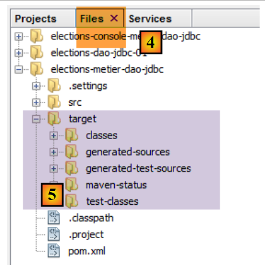
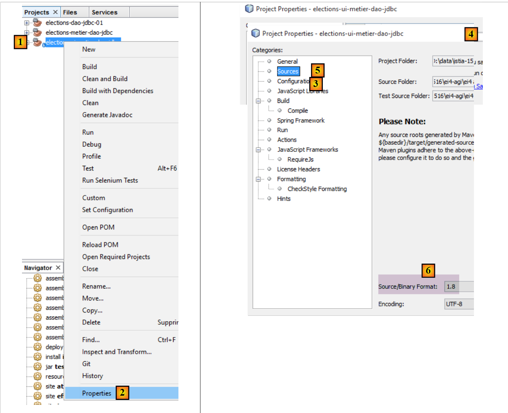
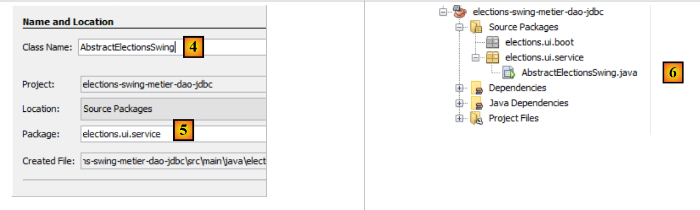
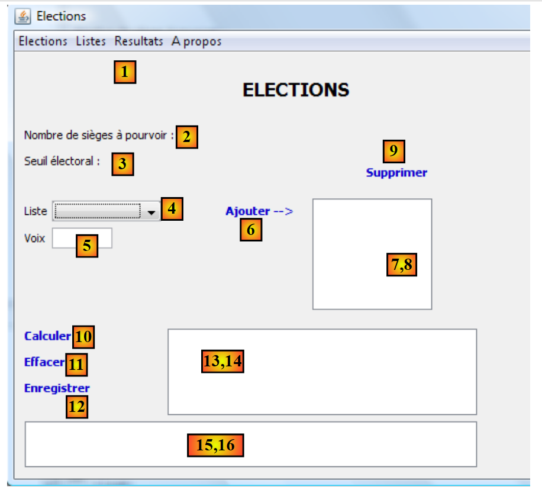
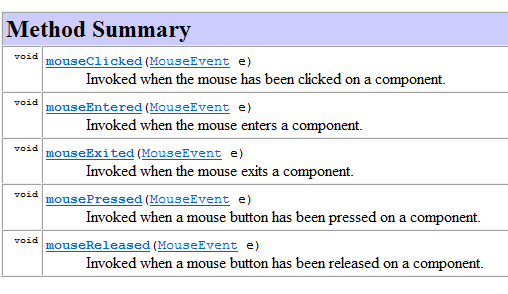
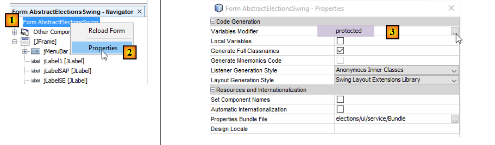
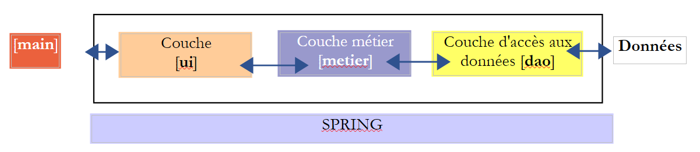

10. [Tarea]: Implementación de la capa [ui] utilizando una interfaz Swing:
Palabras clave: arquitectura multicapa, Spring, inyección de dependencias, biblioteca de componentes Swing.
 |
10.1. Soporte
 |
En la capa [UI], queremos crear una interfaz gráfica de usuario (GUI) Swing. NetBeans cuenta con una herramienta llamada [Matisse] para crear estas interfaces Swing, que es superior a la que ofrece Eclipse. Las interfaces Swing están siendo sustituidas cada vez más por interfaces JavaFX. NetBeans y Eclipse utilizan la misma herramienta para crear estas últimas. Por lo tanto, si creamos interfaces JavaFX, podemos utilizar Eclipse en toda la arquitectura por capas.
NetBeans puede abrir cualquier proyecto Maven. Por lo tanto, utilizaremos el proyecto Maven anterior y le añadiremos una interfaz Swing. En [2], cargamos (Archivo / Abrir proyecto) los proyectos Maven de las tres capas que creamos con Eclipse. A continuación, compilamos sus binarios [3]. Las opciones [Compilar] y [Limpiar y compilar] compilan el binario del proyecto al que se aplican. Estos binarios se colocan en la carpeta [target] del proyecto [4-5]:
 |
La opción [Limpiar] elimina esta carpeta [destino]. La opción [Compilar] la vuelve a compilar. La experiencia demuestra que, cuando surgen problemas inesperados, lo primero que hay que hacer es ejecutar [Limpiar y compilar] en el proyecto para asegurarse de que se está trabajando con la última versión. Esto es especialmente necesario cuando se tienen archivos de configuración que, si se modifican, no activan una recompilación automática al ejecutar el proyecto. A continuación, debe forzar esta recompilación con un [Limpiar y compilar] para que sus nuevas versiones se instalen en la carpeta [destino].
10.2. Cómo funciona la aplicación
Volvamos a la arquitectura general de la aplicación [Elections]:
 |
Ahora nos estamos centrando en una nueva implementación de la capa [ui]. La única implementación que existe actualmente es una interfaz de consola. Ahora estamos creando una interfaz gráfica de usuario.
El usuario dispondrá de la siguiente interfaz para interactuar con la aplicación [Elections]:
 |
 |
La interfaz gráfica de usuario se encuentra en la capa [ui]. Es esta capa la que interactúa con el usuario.
- Al iniciarse, la aplicación de consola [main] crea instancias de las tres capas de la aplicación utilizando Spring. Esto se hace antes incluso de que la interfaz gráfica de usuario sea visible. Asimismo, durante esta fase de inicialización, se solicita a la capa [dao] la información que caracteriza la elección (número de escaños a cubrir, umbral electoral, listas competidoras). Si esta fase de inicialización falla (por ejemplo, imposibilidad de acceder a los datos), se muestra un mensaje de error en la consola y no se muestra la interfaz gráfica de usuario.
- Si los datos se han leído correctamente, se muestra la interfaz gráfica con la siguiente información (véase la captura de pantalla anterior):
- el número de escaños que hay que cubrir (2)
- el umbral electoral del punto (3)
- los números de identificación y los nombres de las listas de candidatos en (4)
- A continuación, el usuario asigna el número de votos a cada lista de candidatos utilizando los campos 4 (ID - Nombre), 5 (Votos) y 6 (Añadir).

- A continuación, puede utilizar el enlace (10) para calcular los escaños:

- El enlace [Guardar] (12) le permite guardar los resultados en el origen de datos.
10.3. La clase [ElectionsSwing] que implementa la capa [ui]
10.3.1. El proyecto NetBeans
Nota: En la sección 22.4 se explica cómo obtener NetBeans.
El proyecto final de NetBeans para la aplicación tendrá este aspecto [1]. Compílelo siguiendo los pasos [2–5]:
 |
 |
Asegúrate de que el proyecto esté configurado para compilarse con un JDK 1.8 [1-6]:
 |
10.3.2. Configuración de Maven
El nuevo proyecto [elections-swing-business-dao-jdbc] se basará en el proyecto anterior [elections-console-business-dao-jdbc]. Para ello, añade una dependencia de Maven de la siguiente manera [1-3]:
 |
 |
10.3.3. Creación de la interfaz gráfica de usuario
Para crear la interfaz gráfica de usuario, podemos proceder de la siguiente manera:
 |
 |
- [1]: Añade un objeto al paquete [elections.ui.service]
- [2]: Selecciona la opción [JFrame Form] en la categoría [Swing GUI Forms]
 |
- [4]: Asigna un nombre a la clase
- [5]: El paquete de la clase.
- Finaliza el asistente.
- [6]: La clase generada
 |
- [7]: la clase [AbstractElectionsSwing] en modo [Diseño]
- [8]: la pestaña [Navigator] que muestra el árbol [9] de componentes de ventana
- [10]: la pestaña [Properties], que muestra las propiedades del componente [JFrame] seleccionado en [9]
 |
- [11]: [JFrame] es un contenedor de componentes. Los componentes se pueden organizar dentro del contenedor según diversas reglas de posicionamiento denominadas diseños. Aquí elegimos el diseño [Diseño libre] [14], que permite colocar los componentes libremente dentro del contenedor.
Encontramos los componentes en la barra de herramientas denominada «Paleta»:
 |
- [1]: la paleta
- [2]: Se coloca un componente JLabel en el contenedor de componentes
- Al hacer clic con el botón derecho del ratón sobre él, podemos acceder a varias propiedades: su nombre [4], su texto [3] o sus controladores de eventos [5]. Utilizamos [3] para establecer el texto [6].
 |
- [1]: La pestaña [Propiedades] del componente [JLabel] permite acceder a sus propiedades: su posición horizontal [2], su posición vertical [3], la fuente del texto [4] y el texto [5].
Cuando se coloca y configura un componente en la interfaz gráfica y se guarda (Ctrl-S) el trabajo, se genera código en la clase [AbstractElectionsSwing]:
 |
 |
No modifiques este código que aparece en gris, ya que se borra y se vuelve a generar la próxima vez que guardes. Cualquier cambio que realices se perdería.
Puede encontrar un tutorial sobre cómo crear una interfaz gráfica de usuario con NetBeans en la URL [https://netbeans.org/kb/docs/java/quickstart-gui.html?print=yes#design] (noviembre de 2015).
Ahora crearemos la siguiente interfaz:
 |
Los componentes de la interfaz son los siguientes:
N.º | Tipo | nombre | función |
JMenuBar | jMenuBar1 | un menú | |
JLabel | jLabelSAP | el número de plazas disponibles | |
JLabel | jLabelSE | el umbral electoral | |
JComboBox | jComboBoxListNames | lista de nombres de las listas que compiten | |
JTextField | jTextFieldVotesList | el número de votos de una lista | |
JLabel | jLabelAdd | para añadir una lista a (8) | |
(JScrollPane, JList) | jListNamesVoices | los nombres y las voces de las listas | |
JLabel | jLabelDelete | para eliminar de (8) la lista seleccionada en (8) | |
JLabel | jLabelCalculate | para calcular los resultados de las elecciones | |
JLabel | jLabelClear | para borrar los resultados de la elección | |
JLabel | jLabelSave | para guardar los resultados de la elección | |
(JScrollPane, JList) | jListResults | para mostrar los resultados de las elecciones | |
(JScrollPane, JTextPane) | jTextPaneMessages | para mostrar mensajes de seguimiento |
La anotación (JScrollPane, JList) [13-14] sirve para indicar que, cuando se coloca un componente [JList] en la ventana, este se inserta automáticamente en un componente [JScrollPane] que permite desplazarse por la lista. Es el componente [JScrollPane] el que permite ver todos los elementos de la lista, aunque en un momento dado solo sea visible un número limitado de ellos. Lo mismo se aplica al componente [JTextPane] [15-16].
El menú se puede crear de la siguiente manera:
 |
- [1, 2]: Se coloca un componente [Barra de menús] en la ventana
- [3]: el menú predeterminado, tal y como se muestra en la pestaña [Navegador]
- [4, 5, 6]: al hacer clic con el botón derecho del ratón en una opción del menú, puedes:
- cambiar su texto [4], su nombre [5]
- gestionar sus eventos [6]
- [7]: El menú deseado
El menú deseado es el siguiente:
Nivel 1 | Nivel 2 |
Elecciones | |
Salida | |
Listas | |
Añadir | |
Eliminar | |
Resultados | |
Calcular | |
Borrar | |
Guardar | |
Acerca de |
Puedes probar la interfaz gráfica en cualquier momento:
 |
Al crear la interfaz, debe asociar un controlador de eventos a determinadas etiquetas y menús [Añadir, Eliminar, ...]. A continuación le indicamos cómo hacerlo:
 |
- [1]: Haz clic con el botón derecho del ratón en el componente para el que deseas gestionar un evento
- [2]: Selecciona la opción [Eventos]
- [3]: Selecciona una categoría de evento
- [4]: Selecciona el evento que deseas gestionar
El código Java generado por esta operación es el siguiente:
jLabelCalculer.addMouseListener(new java.awt.event.MouseAdapter() {
public void mouseClicked(java.awt.event.MouseEvent evt) {
jLabelCalculerMouseClicked(evt);
}
});
...
private void jLabelCalculerMouseClicked(java.awt.event.MouseEvent evt) {
// TODO add your handling code here:
}
- Líneas 1–5: Se añade un controlador de eventos al componente jLabelCalculer. El método addMouseListener espera como parámetro una clase que implemente la siguiente interfaz MouseListener:
 |
La interfaz MouseListener está implementada por varias clases, entre ellas la clase MouseAdapter. Esta clase implementa los cinco métodos de la interfaz MouseListener, pero dichos métodos no realizan ninguna acción. Por lo tanto, debes crear una subclase de esta clase para implementar los métodos que desees. Esto es lo que se hace en el código anterior y se muestra a continuación:
jLabelCalculer.addMouseListener(new java.awt.event.MouseAdapter() {
public void mouseClicked(java.awt.event.MouseEvent evt) {
jLabelCalculerMouseClicked(evt);
}
});
El código anterior utiliza la técnica de clases anónimas descrita en la sección 2.5 del curso [ref1].
En la línea 1, el parámetro del método addMouseListener es una clase anónima, definida sobre la marcha. Se trata de una instancia de una clase derivada de la clase MouseAdapter (línea 1), cuyo método mouseClicked se sobrescribe (líneas 2-4) para que realice una acción específica.
El método jLabelCalculerMouseClicked, invocado en la línea 3, se define de la siguiente manera:
private void jLabelCalculerMouseClicked(java.awt.event.MouseEvent evt) {
// TODO add your handling code here:
}
El desarrollador gestiona el evento «MouseClicked» colocando código en este método.
NetBeans genera todos los controladores de eventos de esta manera. El desarrollador puede ignorar las líneas de código generadas por NetBeans para asociar un método al evento de un componente. Simplemente puede colocar su código en la línea 2 anterior. A continuación se muestra un ejemplo:
private void jLabelCalculerMouseClicked(java.awt.event.MouseEvent evt) {
System.out.println("Mouse Clicked");
}
Si ejecutas la interfaz gráfica de usuario y haces clic en el botón [Calcular], aparecerá un mensaje en la consola:
 |
- [1]: Haz clic dos veces en la etiqueta [Calcular]
- [2]: El controlador de eventos se ejecutó y generó los mensajes mouseClicked en la consola de NetBeans.
Los componentes [jComboBoxNomsListes, jListNomsVoix, jListResultats] se declaran de la siguiente manera:
protected javax.swing.JComboBox jComboBoxNomsListes;
protected javax.swing.JList jListNomsVoix;
protected javax.swing.JList jListResultats;
Estos componentes son listas que normalmente se configuran con un tipo T: el tipo de los elementos del modelo que muestran los componentes. Este tipo T puede ser cualquier tipo. El valor que se muestra en el componente de lista es de tipo [String]. Por defecto, se utiliza el método [T.toString()] para la visualización. Para controlar mejor lo que se muestra, el tipo T será aquí el tipo String. Por lo tanto, la declaración correcta de nuestras listas es la siguiente:
protected javax.swing.JComboBox<String> jComboBoxNomsListes;
protected javax.swing.JList<String> jListNomsVoix;
protected javax.swing.JList<String> jListResultats;
Logramos este resultado modificando una de las propiedades del componente:
 |
10.3.4. Separación del código
Volvamos a la estructura de nuestra aplicación:
 |
La clase [AbstractElectionsSwing] debe implementar la capa [ui] anterior. Su código, generado por NetBeans, contiene actualmente solo código de gestión de ventanas y controladores de eventos que, por el momento, no realizan ninguna acción. Como hemos visto anteriormente, la clase [AbstractElectionsSwing] tendrá que gestionar las interacciones con la capa [business]. Esta gestión se llevará a cabo en los controladores de eventos. Para aclarar la estructura del código, decidimos dividirlo en dos clases:
- [AbstractElectionsSwing], que se mantendrá tal y como la generó NetBeans con algunos cambios menores. Esta clase no gestionará ningún evento por sí misma. Los controladores de eventos estarán vacíos y se declararán abstractos. Serán implementados por una clase derivada de [AbstractElectionsSwing].
- [ElectionsSwing], una clase derivada de [AbstractElectionsSwing] que implementará todos los controladores de eventos.
Este tipo de separación no es inusual. Se puede encontrar, por ejemplo, en páginas web ASP.NET (versión no MVC). El proyecto de NetBeans evoluciona de la siguiente manera:
 |
El código de la clase [AbstractElectionsSwing] evoluciona de la siguiente manera:
public abstract class AbstractElectionsSwing {
....
private void jMenuItemCalculerActionPerformed(java.awt.event.ActionEvent evt) {
doCalculer();
}
...
private void jLabelCalculerMouseClicked(java.awt.event.MouseEvent evt) {
if (jLabelCalculer.isEnabled()) {
doCalculer();
}
}
....
// event managers
abstract protected void doSupprimer();
abstract protected void doCalculer();
abstract protected void doQuitter();
abstract protected void doEffacer();
abstract protected void doEnregistrer();
abstract protected void doAjouter();
abstract protected void doInformer();
abstract protected void doMajLabelAjouter();
abstract protected void doMajLabelSupprimer();
...
}
- línea 1: la clase se declara abstracta
- líneas 3–5: gestión del clic en la opción de menú [jMenuItemCalculer]. Vemos que la gestión del evento se delega al método doCalculer en la línea 19. Este método no está implementado y se declara como abstracto. Será implementado por la clase derivada [ElectionsSwing];
- líneas 9–13: el controlador del evento de clic en la etiqueta [jLabelCalculer]. Un clic siempre desencadena un evento, tanto si el componente [jLabel] está activo (enabled=true) como inactivo (enabled=false). Aquí nos aseguramos de que esté efectivamente activo para gestionar el evento;
- líneas 15 y siguientes: esta técnica de delegar el manejo de eventos a un método abstracto se aplica a todos los manejadores de eventos.
La clase [ElectionsSwing], derivada de [AbstractElectionsSwing], implementa todos los controladores de eventos no implementados por [AbstractElectionsSwing]:
package elections.ui.service;;
...
public class ElectionsSwing extends AbstractElectionsSwing {
// event managers
@Override
protected void doInformer() {
...
}
@Override
protected void doAjouter() {
...
}
@Override
protected void doCalculer() {
...
}
@Override
protected void doEffacer() {
...
}
@Override
protected void doEnregistrer() {
...
}
@Override
protected void doQuitter() {
System.exit(0);
}
@Override
protected void doSupprimer() {
...
}
@Override
protected void doMajLabelAjouter() {
...
}
@Override
protected void doMajLabelSupprimer() {
...
}
}
- línea 3: [ElectionsSwing] extiende [AbstractElectionsSwing]
- líneas 7–50: los controladores de eventos para la ventana gráfica
Los métodos de la clase derivada [ElectionsSwing] manipularán los componentes de la clase padre [AbstractElectionsSwing]. Actualmente, estos componentes tienen un ámbito privado, lo que impide que la clase hija [ElectionsSwing] acceda a ellos:
private JMenuItem jMenuItemAPropos = null;
private JLabel jLabelAjouter = null;
Para resolver este problema, nos aseguraremos de que el ámbito de los componentes de la interfaz gráfica de usuario sea [protected]:
 |
- establecer el atributo [protected] en [3];
10.3.5. Implementación de la interfaz [IElectionsUI]
Volvamos a la estructura de nuestra aplicación:
 |
Arriba, la capa [ui] debe presentar la interfaz [IElectionsUI] al objeto [main]:
package elections.ui.service;
public interface IElectionsUI {
/**
* lance le dialogue avec l'utilisateur
*/
public void run();
}
Esta interfaz se definió en el proyecto [elections-console-metier-dao-jdbc] y se describe en la sección 9.4. Dado que este proyecto es una dependencia del proyecto [swing], esta interfaz es conocida.
Dado que la clase [AbstractElectionsSwing] se ha convertido en abstracta, Spring ya no puede crear una instancia de ella. En su lugar, ahora debe crearse una instancia de la clase [ElectionsSwing]. La clase [ElectionsSwing] debe implementar la interfaz [IElectionsUI]. Por lo tanto, su código cambia de la siguiente manera:
public class ElectionsSwing extends AbstractElectionsSwing implements IElectionsUI {
// interface [ElectionsUI] run method
public void run() {
...
}
- línea 1: la clase [ElectionsSwing] implementa la interfaz [IElectionsUI]
- líneas 4–6: el método [run] de esta interfaz
¿Qué debe hacer el método run? Mostrar la ventana de la interfaz gráfica de usuario. ¿Cómo lo hacemos? Podemos usar como guía el método [main] generado por NetBeans en la clase [AbstractElectionsSwing], que hace exactamente lo que queremos:
public static void main(String args[]) {
/* Set the Nimbus look and feel */
//<editor-fold defaultstate="collapsed" desc=" Look and feel setting code (optional) ">
/* If Nimbus (introduced in Java SE 6) is not available, stay with the default look and feel.
* For details see http://download.oracle.com/javase/tutorial/uiswing/lookandfeel/plaf.html
*/
try {
for (javax.swing.UIManager.LookAndFeelInfo info : javax.swing.UIManager.getInstalledLookAndFeels()) {
if ("Nimbus".equals(info.getName())) {
javax.swing.UIManager.setLookAndFeel(info.getClassName());
break;
}
}
} catch (ClassNotFoundException ex) {
java.util.logging.Logger.getLogger(NewJFrame.class.getName()).log(java.util.logging.Level.SEVERE, null, ex);
} catch (InstantiationException ex) {
java.util.logging.Logger.getLogger(NewJFrame.class.getName()).log(java.util.logging.Level.SEVERE, null, ex);
} catch (IllegalAccessException ex) {
java.util.logging.Logger.getLogger(NewJFrame.class.getName()).log(java.util.logging.Level.SEVERE, null, ex);
} catch (javax.swing.UnsupportedLookAndFeelException ex) {
java.util.logging.Logger.getLogger(NewJFrame.class.getName()).log(java.util.logging.Level.SEVERE, null, ex);
}
//</editor-fold>
/* Create and display the form */
java.awt.EventQueue.invokeLater(new Runnable() {
public void run() {
new NewJFrame().setVisible(true);
}
});
}
El constructor [AbstractElectionsSwing] utilizado en la línea 28 es el siguiente:
public AbstractElectionsSwing() {
initComponents();
}
- Línea 2: El método [initComponents] es un método privado generado por el generador de la interfaz gráfica de usuario. Su código no se puede modificar.
El método [run] de la clase [ElectionsSwing] podría ser entonces el siguiente:
@Override
public void run() {
// on affiche l'interface graphique
SwingUtilities.invokeLater(new Runnable() {
public void run() {
init();
setVisible(true);
}
});
}
- Línea 6: La interfaz gráfica de usuario se inicializa mediante el método [init]. Aquí, nos gustaría llamar al método [initComponents] de la clase padre, pero es privado. Por lo tanto, añadimos el siguiente método [init] a la clase padre [AbstractElectionsSwing]:
protected void init(){
initComponents();
}
- (continuación)
- Dado que se encuentra en la clase [AbstractElectionsSwing], el método [init] tiene acceso al método privado [initComponents] de la misma clase;
- como tiene el atributo [protected], es visible en la clase hija [ElectionsSwing];
- línea 7: se hace visible la interfaz gráfica de usuario;
Nota: una vez que se haya escrito el método [run] en la clase [ElectionsSwing], se puede eliminar el método [main] de la clase abstracta [AbstractElectionsSwing].
10.3.6. La clase ejecutable
Volvamos a la estructura de nuestra aplicación:
 |
Nos gustaría que Spring instanciara la capa [ui] tal y como se hacía cuando se implementaba mediante una aplicación de consola. Para ello, la clase de implementación [ElectionsSwing] debe tener una referencia a la capa [business]:
@Component
public class ElectionsSwing extends AbstractElectionsSwing implements IElectionsUI{
// reference on the [business] layer
@Autowired
private IElectionsMetier metier;
...
- línea 1: la clase [ElectionsSwing] es un componente de Spring;
- líneas 5–6: Spring inyecta una referencia en la capa [business];
La interfaz gráfica de usuario se inicia ejecutando la siguiente clase [BootElectionsSwing]:
 |
package elections.ui.boot;
import elections.ui.service.IElectionsUI;
public class BootElectionsSwing extends AbstractBootElections {
public static void main(String[] arguments) {
new BootElectionsSwing().run();
}
@Override
protected IElectionsUI getUI() {
return ctx.getBean("electionsSwing", IElectionsUI.class);
}
}
Ya explicamos un código similar en la sección 9.5 al analizar el código de las clases [AbstractBootElections] y [BootElectionsConsole]. En la línea 12, recuperamos el bean denominado [electionsSwing], que corresponde al nombre estándar de Spring para la clase [ElectionsSwing].
10.3.7. Inicialización de la interfaz gráfica de usuario
Cuando se muestra la GUI, algunos de sus componentes ya se han inicializado:

Como se muestra arriba:
- que el cuadro combinado se ha rellenado con los nombres de las listas;
- que se muestran el número de escaños por cubrir y el umbral electoral;
- que algunos enlaces se han desactivado;
- se muestra un mensaje de éxito en la parte inferior de la ventana;
¿Cuándo tendrán lugar estas inicializaciones? Solo pueden producirse después de que se haya inicializado el campo [electionsMetier] de la clase [ElectionsSwing]. Esto se debe a que los nombres de las listas se solicitarán a la capa [metier]. Spring inicializará este campo en el siguiente orden:
- utilizando el constructor sin parámetros de la clase [ElectionsSwing];
- inyección de dependencias, en este caso la referencia a la capa [business];
- ejecución del método [run] de la clase [ElectionsSwing]:
@Override
public void run() {
// on affiche l'interface graphique
SwingUtilities.invokeLater(new Runnable() {
public void run() {
init();
setVisible(true);
}
});
}
- En la línea 12, especificamos que llamaríamos al método [init] de la clase padre, que dibujará los componentes de la interfaz gráfica de usuario. Sobrescribiremos este método localmente en la clase [ElectionsSwing]. Es dentro de este método donde inicializaremos los componentes de la ventana (cuadros combinados, etiquetas) con datos esta vez:
El método [init] local podría tener el siguiente esqueleto:
public class ElectionsSwing extends AbstractElectionsSwing implements IElectionsUI {
...
// reference on the [business] layer
@Autowired
private IElectionsMetier metier;
// initializations
public void init() {
// generation of components by the parent class
super.init();
// lists are requested from the [metier] layer
...
// associate list names with the jComboBoxNomsListes combo
...
// and election parameters
...
// we initialize the labels linked to these two pieces of information
...
// message of success
...
// initialization status of certain components form
...
}
Fíjate, en la línea 11, en la llamada al método [init] de la clase padre.
10.3.8. La clase [Utilities]
Se han agrupado varios métodos de utilidad estáticos en la clase [Utilities]:
 |
La clase [Utilities] es la siguiente:
package istia.st.elections.ui;
import javax.swing.JLabel;
import javax.swing.JMenuItem;
//utility class
class Utilitaires {
// manage label array status
public static void setEnabled(JLabel[] labels, boolean value) {
for (int i = 0; i < labels.length; i++) {
labels[i].setEnabled(value);
}
}
// manage the status of a table of menu options
public static void setEnabled(JMenuItem[] menuItems, boolean value) {
...
}
}
- Línea 9: El método setEnabled establece el estado de los componentes JLabel definidos en una matriz. El método setEnabled de un componente JLabel permite habilitar o deshabilitar el JLabel.
Tarea: Siguiendo el ejemplo del método setEnabled de la línea 9, escribe el método setEnabled en la línea 16 que haga lo mismo con los componentes *JMenuItem*.
10.3.9. El código de la clase [ElectionsSwing]
Repasemos la estructura general de la clase [ElectionsSwing]:
package istia.st.elections.ui;
...
public class ElectionsSwing extends AbstractElectionsSwing implements IElectionsUI {
// reference on the [business] layer
@Autowired
private IElectionsMetier metier;
// initializations
public void init() {
...
}
// event managers
@Override
protected void doInformer() {
...
}
@Override
protected void doAjouter() {
...
}
@Override
protected void doCalculer() {
...
}
@Override
protected void doEffacer() {
...
}
@Override
protected void doEnregistrer() {
...
}
@Override
protected void doQuitter() {
System.exit(0);
}
@Override
protected void doSupprimer() {
...
}
@Override
protected void doMajLabelAjouter() {
...
}
@Override
protected void doMajLabelSupprimer() {
...
}
}
Examinaremos los métodos de la clase uno por uno.
10.3.9.1. El método [init]
Volvamos a la interfaz gráfica:
 |
El método [init] tiene los siguientes objetivos:
- rellenar el cuadro combinado [4] con los ID y los nombres de las listas en el formato [ID - nombre]
- mostrar un mensaje de éxito en [15]
- inicializar las etiquetas [2] y [3]
- desactivar determinados enlaces
El esqueleto del método [init] podría ser el siguiente:
@Override
protected void init() {
// génération des composants par la classe parent
super.init();
// initialisations locales
modèleNomsVoix = new DefaultListModel<>();
jListNomsVoix.setModel(modèleNomsVoix);
modèleRésultats = new DefaultListModel<>();
jListResultats.setModel(modèleRésultats);
String info;
try {
// on demande les listes à la couche [métier]
listes = ...
// on associe les noms des listes au combo jComboBoxNomsListes
...
// ainsi que les paramètres de l'election
int nbSiegesAPourvoir = ...
double seuilElectoral = ...
// on initialise les labels liés à ces deux informations
...
// message de succès
info = "Source de données lue avec succès";
} catch (ElectionsException ex1) {
// on note l'error
info = getInfoForException("Les erreurs suivantes se sont produites :", ex1);
} catch (RuntimeException ex2) {
// on note l'error
info = getInfoForException("Les erreurs suivantes se sont produites :", ex2);
}
// on affiche l'info
jTextPaneMessages.setText(info);
jTextPaneMessages.setCaretPosition(0);
// état formulaire
Utilitaires.setEnabled(new JLabel[] { jLabelAjouter, jLabelCalculer, jLabelEnregistrer, jLabelSupprimer }, false);
Utilitaires.setEnabled(
new JMenuItem[] { jMenuItemAjouter, jMenuItemCalculer, jMenuItemEnregistrer, jMenuItemSupprimer }, false);
// centrer la fenêtre
Dimension screenSize = Toolkit.getDefaultToolkit().getScreenSize();
Dimension frameSize = getSize();
if (frameSize.height > screenSize.height) {
frameSize.height = screenSize.height;
}
if (frameSize.width > screenSize.width) {
frameSize.width = screenSize.width;
}
setLocation((screenSize.width - frameSize.width) / 2, (screenSize.height - frameSize.height) / 2);
}
private String getInfoForException(String message, ElectionsException ex) {
// on affiche le message
StringBuffer info = new StringBuffer(String.format("%s -------------\n", message));
info.append(String.format("Code erreur : %d\n", ex.getCode()));
// on affiche les erreurs
for (String erreur : ex.getErreurs()) {
info.append(String.format("-- %s\n", erreur));
}
return info.toString();
}
private String getInfoForException(String message, RuntimeException ex) {
// on affiche le message
StringBuffer info = new StringBuffer(String.format("%s -------------\n", message));
// on affiche la pile des exceptions
Throwable cause = ex;
while (cause != null) {
info.append(String.format("-- %s\n", cause.getMessage()));
cause = cause.getCause();
}
return info.toString();
}
Tarea: Completa el código del método [init].
Lectura del curso: Componentes JTextField y JLabel
Nota:
Un componente JList muestra los datos de un modelo. Por defecto, este modelo es de tipo DefaultListModel (líneas 2 y 3). Un objeto DefaultListModel se comporta de forma similar a un ArrayList:
- Para añadir un objeto o al modelo:
[DefaultListModel].addElement(Object o);
En esta aplicación, el objeto o siempre será de tipo String.
- Para eliminar el elemento i del modelo:
[DefaultListModel].remove(int i);
- Para recuperar el elemento i del modelo:
[DefaultListModel].elementAt(int i);
Para añadir un elemento al cuadro combinado [jComboBoxNomsListes], utilice el método [addItem]:
jComboBoxNomsListes.addItem(chaîne de caractères)
Un componente JTextPane dispone de los métodos getText() y setText() para leer y escribir el texto mostrado.
10.3.9.2. Gestión del estado del enlace [Add]
El botón [Añadir] [6] solo está activo cuando el campo [5] de votos no está vacío. En la clase [AbstractElectionsSwing], el controlador que rastrea los movimientos del cursor en el campo [5] es el siguiente:
private void jTextFieldVoixListeCaretUpdate(javax.swing.event.CaretEvent evt) {
doMajLabelAjouter()
}
La línea 2 llama al método [doMajLabelAjouter] de la clase [ElectionsSwing].
protected void doMajLabelAjouter() {
// on fixe l'état du label [jLabelAjouter]
...
// on fixe l'état du menu [jMenuItemAjouter]
...
}
Tarea: Completa el código del método [doMajLabelAjouter].
10.3.9.3. Asigna votos a cada lista
Para cada lista de candidatos de (4), proceda de la siguiente manera:
- selecciona una lista de (4)
- introduzca el número de votos en (5)
- confirma haciendo clic en el enlace [Añadir]
Los errores de introducción de datos se señalan como se muestra en el siguiente ejemplo:

Si el número de votos es correcto, la lista se añade al componente (8), el número de votos se borra y el enlace [Añadir] se desactiva:
 |  |
En la clase [AbstractElectionsSwing], el controlador que gestiona el clic en el enlace [Añadir] es el siguiente:
private void jLabelAjouterMouseClicked(java.awt.event.MouseEvent evt) {
if (jLabelAjouter.isEnabled()) {
doAjouter();
}
}
La línea 3 llama al método [doAjouter] de la clase [ElectionsSwing]:
// modèles des listes JList
private DefaultListModel<String> modèleNomsVoix = null;
private DefaultListModel<String> modèleRésultats = null;
// les listes en compétition
private ListeElectorale[] listes;
// listes saisies par l'user
private final List<ListeElectorale> listesSaisies = new ArrayList<>();
private ListeElectorale[] tListesSaisies;
...
@Override
protected void doAjouter() {
// le nombre de voix est-il correct ?
...
// si erreur, alors on la signale
if (erreur) {
JOptionPane.showMessageDialog(null, "Nombre de voix incorrect", "Elections : erreur",
JOptionPane.INFORMATION_MESSAGE);
jTextFieldVoixListe.requestFocus();
// retour à l'graphic interface
return;
}
// pas d'error - save the list
listesSaisies.add(...);
modèleNomsVoix.addElement(...);
// on nettoie le nombre de voix
jTextFieldVoixListe.setText("");
// état formulaire (menus, labels)
...
}
- Línea 25: Cada vez que el usuario añade voces a una lista y confirma su selección, esta lista se almacena en el campo [listesSaisies] de la línea 9. La lista se guarda allí con la información [id, versión, nombre, voz]. Los tres primeros datos proceden de las listas almacenadas inicialmente en la matriz de la línea 6. El método [getSelectedIndex] del cuadro combinado devuelve el índice de la lista seleccionada;
Tarea: Completa el código del método [doAjouter].
10.3.9.4. Gestiona el estado del enlace [Delete]
El enlace [Delete] [9] solo está activo cuando se selecciona un elemento en [8].
En la clase [AbstractElectionsSwing], el controlador que responde al clic sobre un elemento de la lista [8] es el siguiente:
private void jListNomsVoixValueChanged(javax.swing.event.ListSelectionEvent evt) {
doMajLabelSupprimer();
}
La línea 2 llama al método [doMajLabelSupprimer] de la clase [ElectionsSwing].
@Override
protected void doMajLabelSupprimer() {
// on allume le label [jLabelSupprimer] et l'corresponding menu option
...
}
Tarea: Completa el código del método [doMajLabelSupprimer].
10.3.9.5. Eliminar una lista de candidatos
El enlace [Eliminar] [9] te permite eliminar el par (nombre, voto) seleccionado en (8). Una vez completada la eliminación, el enlace [Eliminar] se desactiva. Solo se volverá a activar cuando se seleccione una nueva lista en (8).
 |  |
En la clase [AbstractElectionsSwing], el controlador que responde al clic en el enlace [Eliminar] es el siguiente:
private void jLabelSupprimerMouseClicked(java.awt.event.MouseEvent evt) {
if(jLabelSupprimer.isEnabled()){
doSupprimer();
}
}
La línea 3 llama al método [doSupprimer] de la clase [ElectionsSwing].
@Override
protected void doSupprimer() {
// suppression de la liste sélectionnée, du modèle modèleNomsVoix et des listes saisies
...
// maj de l'status of labels and form menu options
Utilitaires.setEnabled(...);
...
}
Tarea pendiente: completar el código del método [doSupprimer].
10.3.9.6. Gestionar el estado del enlace [Calculate]
El enlace [Calculate] [10] solo está activo cuando hay al menos un elemento en [8].
Tarea: Añadir el código necesario para gestionar este enlace en los métodos [doAdd] y [doDelete] escritos anteriormente. También se gestionará la opción de menú correspondiente.
Nota: El número de elementos en un DefaultListModel se obtiene mediante el método size().
10.3.9.7. Calcular plazas
El enlace [Calcular] [10] permite iniciar el cálculo de plazas y mostrar los resultados en (14). Si el cálculo falla (se han eliminado todas las listas), aparece un mensaje de error en [15]. En cualquier caso, una vez finalizado el cálculo, el enlace [Calcular] [10] queda desactivado.
En la clase [AbstractElectionsSwing], el controlador que responde al clic en el enlace [Calcular] es el siguiente:
private void jLabelCalculerMouseClicked(java.awt.event.MouseEvent evt) {
if(jLabelCalculer.isEnabled()){
doCalculer();
}
}
La línea 3 llama al método [doCalculer] de la clase [ElectionsSwing].
// listes saisies par l'utilisateur
private final List<ListeElectorale> listesSaisies = new ArrayList<>();
private ListeElectorale[] tListesSaisies;
...
@Override
protected void doCalculer() {
tListesSaisies = listesSaisies.toArray(new ListeElectorale[0]);
// calcul des sièges
try {
...
} catch (ElectionsException ex) {
// on affiche l'exception
...
return;
}
// affichage des résultats
...
// maj état formulaire
Utilitaires.setEnabled(...);
}
Tarea: Completa el código del método [doCalculer].
10.3.9.8. Guarda los resultados en el origen de datos
El enlace [Guardar] (12) te permite guardar los resultados del cálculo de plazas en la fuente de datos. Una vez que el guardado se ha realizado correctamente, el enlace [Guardar] se desactiva. Si el guardado falla, se muestra un mensaje de error en [15]. En cualquier caso, el enlace [Guardar] se desactiva.
En la clase [AbstractElectionsSwing], el controlador que gestiona el clic en la etiqueta [Guardar] es el siguiente:
private void jLabelEnregistrerMouseClicked(java.awt.event.MouseEvent evt) {
if(jLabelEnregistrer.isEnabled()){
doEnregistrer();
}
}
La línea 3 llama al método [doEnregistrer] de la clase [ElectionsSwing]:
@Override
protected void doEnregistrer() {
// on demande l'enregistrement à la couche métier
try {
...
} catch (ElectionsException ex) {
// on affiche l'exception
...
// retour à l'interface graphique
return;
}
// maj du formulaire
Utilitaires.setEnabled(...);
...
}
Tarea: Completa el código del método [doEnregistrer].
10.3.9.9. Borrar resultados
El enlace [Borrar] (11) borra los resultados mostrados en (14).
En la clase [AbstractElectionsSwing], el controlador que gestiona el clic en la etiqueta [Clear] es el siguiente:
private void jLabelEffacerMouseClicked(java.awt.event.MouseEvent evt) {
if(jLabelEffacer.isEnabled()){
doEffacer();
}
}
La línea 3 llama al método [doEffacer] de la clase [ElectionsSwing]:
@Override
protected void doEffacer() {
// on vide la liste des résultats
....
// maj du formulaire
Utilitaires.setEnabled(...);
}
Tarea: Completa el código del método [doEffacer].
Nota: La clase DefaultListModel tiene un método clear() que elimina todos sus elementos.
10.3.10. Mejoras
La interfaz gráfica anterior se puede mejorar de varias maneras: el usuario podría olvidarse de introducir los votos para todas las listas presentes en el cuadro combinado, y también podría introducir accidentalmente los votos para la misma lista varias veces.
Tarea: Mejora el algoritmo para que no se produzca ninguno de estos casos. Una solución sencilla es mantener un diccionario de las listas introducidas, donde las claves sean los elementos del cuadro combinado. También nos aseguraremos de que el botón [Calcular] solo esté habilitado cuando se hayan introducido todas las listas.
Consulte el curso [ref1]: la clase HashTable en la sección 3.8.